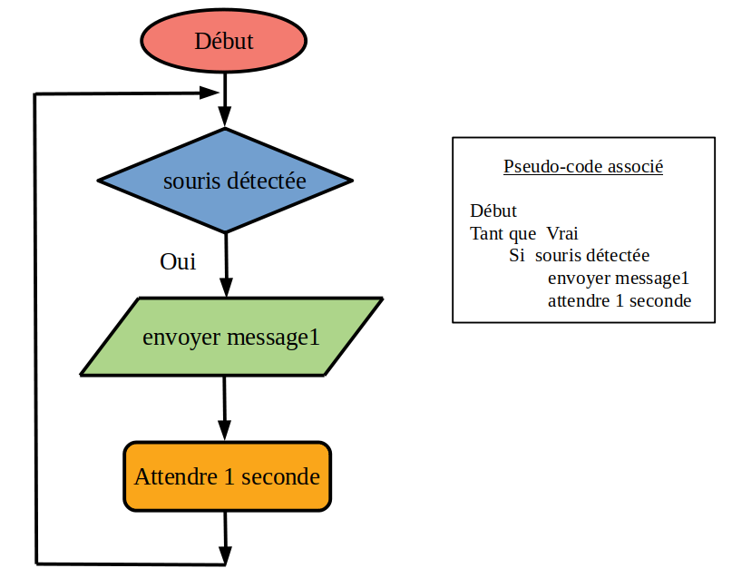

Attendre que le projet se charge...
Voici un exemple de système informatique : un détecteur de présence avec capteur infrarouge, programmé avec scratch.
On clique d'abord sur le drapeau vert, puis on déplace la souris avec les flèches du clavier.
Le détecteur de présence déclenche le clignottement d'une lampe quand il détecte la souris.
L'objectif est de programmer le détecteur de présence dans scratch.
Pour cela, il faut suivre la procédure suivante :
Cliquer sur le bouton en haut à droite Voir à l'intérieur : .
Agencer les blocs sélectionnés du sprite Capteur IR, pour programmer ce capteur infrarouge.
Le programme doit déclencher le clignotement de la lampe quand il détecte la présence de la souris. La lampe se déclenche quand elle reçoit le message1. L'algorigramme et le pseudo-code de ce programme sont donnés ci-dessous.
Une fois le programme agencé, cliquer sur le sprite Souris, puis cliquer sur le drapeau vert et déplacer la souris avec les flèches du clavier pour vérifier que le programme fonctionne correctement.

Saisir dans la zone ci-dessous, le message affiché quand la souris déclenche le détecteur de présence.